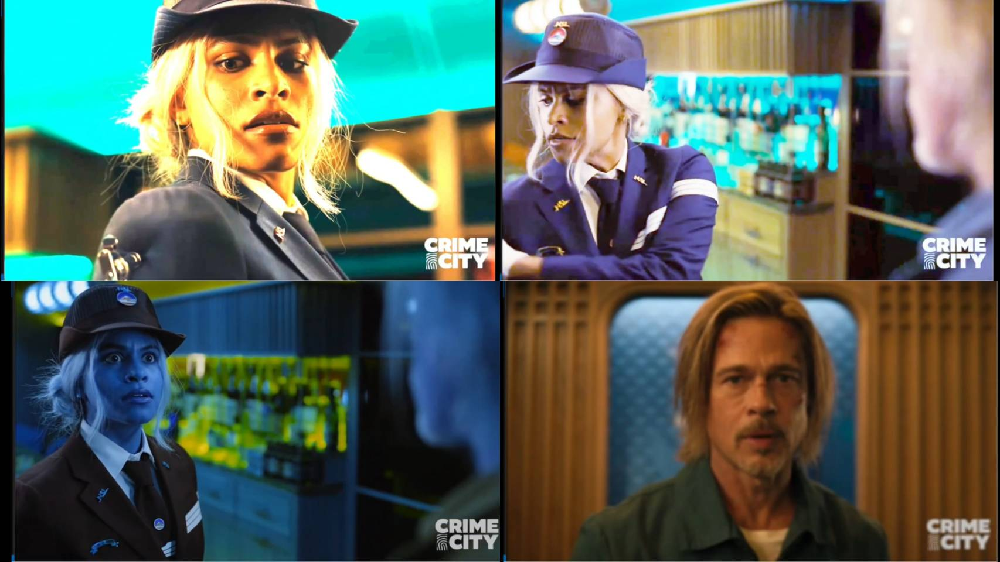
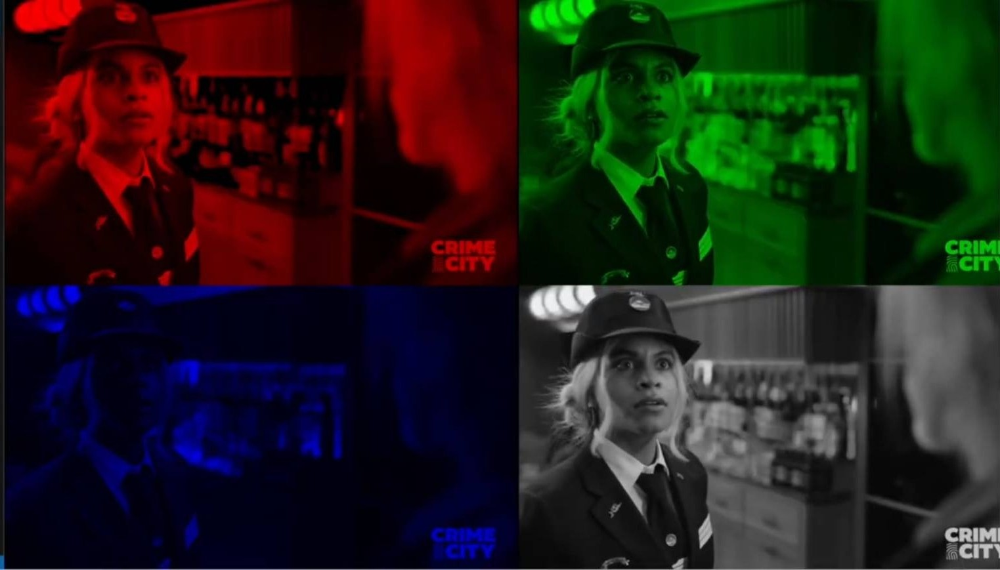
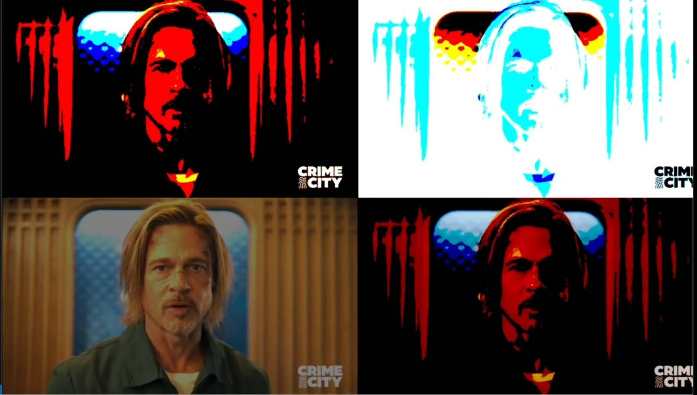
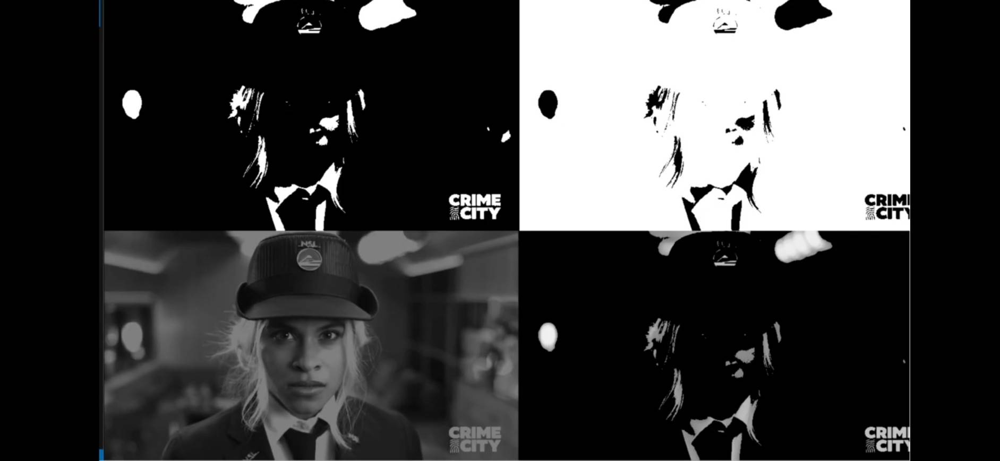
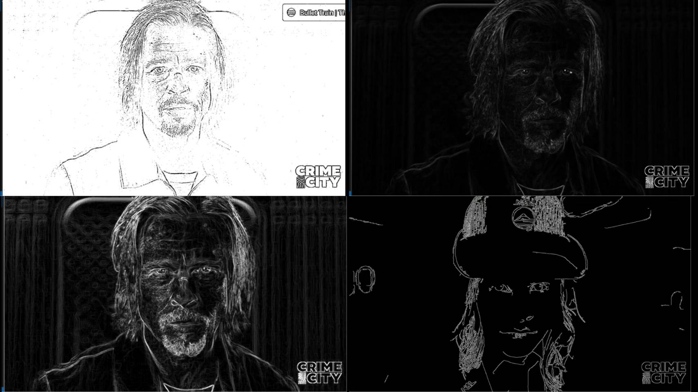
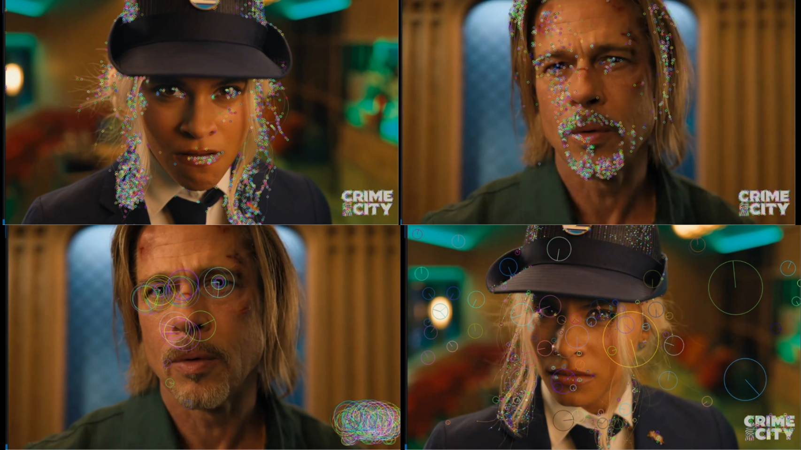

專案名稱：opencv影片影像處理實作
專案簡介
使用 OpenCV 套用多種影片特效與影像處理技術，包含影像疊加、直方圖等化、色彩通道分離、濾波、邊緣偵測 (Sobel, Canny) 及特徵偵測 (FAST, ORB, SIFT) 等。
功能特色
- 時間軸驅動特效：根據影片播放秒數，自動觸發並應用不同的影像處理效果。
- 影像增強與濾波：整合多種影像增強技術，如影像疊加、直方圖等化、色彩通道分離與模糊濾波。
- 經典邊緣偵測：實作並比較 Canny、Sobel 及 Scharr 等多種主流邊-緣偵測演算法。
- 關鍵特徵點提取：應用 SIFT、ORB、FAST 等演算法，從影像中偵測並標示出關鍵特徵點。
- 即時預覽與輸出：逐幀處理影片，即時顯示處理結果，並將最終成果儲存為新的影片檔案。
詳細說明
-
以時間順序所使用的功能作以下說明:
0.7s ~ 1s 多重影像相加 (cv2.add) 將同一張影像多次相加，畫面會變亮、強化亮度感。10.5s ~ 11s 影像兩次相加 (cv2.add) 和上面類似，但疊加次數少，亮度提升幅度較小。
     
11s ~ 11.5s 色彩直方圖等化 (cv2.equalizeHist) 對 B、G、R 三通道做直方圖等化，增強對比度與細節。
11.5s ~ 13.5s 分離色彩通道展示 (紅、綠、藍、灰階) 保留單一色彩通道，展示各色通道影像，並以 2x2 格排列呈現。
13.5s ~ 14.5s 色彩轉換 (cv2.COLOR_BGR2RGB) BGR → RGB，調換色彩通道順序。
14.5s ~ 16.5s 模糊處理 (cv2.blur) 均值濾波，將影像模糊化，降低雜訊。
17.5s ~ 19.5s 四種 Threshold 二值化處理 cv2.THRESH_BINARY / BINARY_INV / TRUNC / TOZERO，將影像依門檻值分割。
19.5s ~ 21s 自適應 Threshold (cv2.adaptiveThreshold) 根據局部區域亮度，自動計算門檻值，適應不同亮度情況。
23s ~ 23.8s 四種 Threshold 應用於灰階影像 和 12.3~13.3 類似，但處理對象是灰階影像。
24.8s ~ 27.5s Sobel 邊緣偵測器 (cv2.Sobel) 偵測水平方向、垂直方向邊緣，再疊合成完整邊緣圖。
27.5s ~ 29s Scharr 邊緣偵測器 (cv2.Scharr) Sobel 加強版，偵測邊緣細節效果更好。
29s ~ 30.7s Canny 邊緣偵測 (cv2.Canny) 著名的邊緣偵測演算法，抓取影像輪廓邊界。
30.7s ~ 34s Dlib 臉部偵測器 使用 Dlib 偵測臉部，並標示方框及分數。
34.5s ~ 36.5s FAST 特徵點偵測 (cv2.FastFeatureDetector) 快速偵測影像角點特徵，適合即時處理。
36.5s ~ 40s ORB 特徵點偵測 (cv2.ORB_create) ORB 特徵偵測與描述，適合特徵匹配應用。
40s ~ 44.5s SIFT 特徵點偵測 (cv2.SIFT_create) SIFT 特徵偵測與描述，提取影像重要特徵點。
使用的技術
主要程式語言：Python
核心函式庫：OpenCV (cv2)
輔助函式庫：NumPy (用於影像陣列堆疊), Dlib (用於臉部偵測)
開發環境：Jupyter Notebook
關鍵演算法與實作：